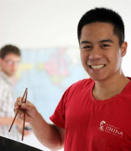
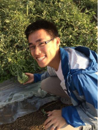
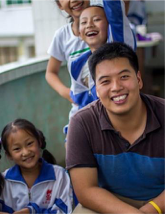

Experiential Learning Adventures in China


Learn to
- Gain Skills
- Step into leadership roles. Practice teamwork
Bridge cross-cultural gaps.Learn how to problem solve
- Build Connections
- Grow a network of peers
Receive mentoring from leaders
- Develop Perspective
- See Chinese culture from fresh angles
Deepen insight into China’s contemporary issues
- Drive Impact
- Help solve a rural community’s water quality challenge
Upon Complatetion of the Trip, Participants Can Expect To:
- Receive a Letter of Recommendation from IntoTheClouds Co-Founder Ming Khor
- University of Toronto, BA, International Relations
- University of Pennsylvania, MBA, Wharton School of Business
- University of Pennsylvania, MA, The Lauder Institute
- Receive a Letter of Recommendation from IntoTheClouds Co-Founder Jeffrey Kwan
- University of California, Berkeley, BA, Civil Engineering
- University of California, Berkeley, MA, Ecological Engineering
- Receive a Certificate of Participation
Create a Summary Report of Water Supply Quality for 20 Chinese Schools - Learn Data Analysis Techniques informed by Wharton Customer Analytics Initiative curriculum
- Present findings to a leading non-profit providing water filtration systems in China
- Build Connections
- Make friends with students from top high schools in the United States and China.
- Join the 100k Strong Foundation initiative. Receive resources, and join a vibrant alumni network of China enthusiasts.
- Connect with locals and establish a network with communities in Yunnan.
- Receive College and Career Guidance
- Learn how to reflect on the issues of water, sustainable development and cross-cultural collaboration.
- Integrate your insights into your career planning and college applications, receive mentorship from our staff.
- Develop an Understanding of the Water Issues in China
- Gain perspective on one of China’s most pressing contemporary issues from scientific, academic, and business angles.
Our team is comprised of Teach for China veterans with a shared passion for enriching the lives of youth.
- 
- Ming Khor
- MBA, Wharton School of Business,
Teach For China
- 
- Jeffrey Kwan
- MsC in Civil and Environmental
Engineering at Cal,
Teach For China
- Meiming Wang
- Major in TCFL,
Sichuan International Studies University
Teach For China
- Marian Zhen
- BA, Chemistry and Math,
New York University,
Teach for China
- 
- Wai Cheng
- BA in International Relations,
Tufts University,
Teach For China
A Letter From Team
Dear fellow adventurer,
IntoTheClouds was founded to engage rising youth leaders from around the world in service-oriented adventures of experiential learning in China.
Years ago, our team worked in China’s Yunnan province as educators in rural communities with the non-profit Teach for China. This experience truly changed our lives: it stretched our intellect, honed our practical problem-solving skills, and gave us the inspiration for our futures. The alumni of Teach for China have since gone on to prestigious graduate schools and stepped into careers in business, science, law, technology, and public policy.
So transformative was our time in China that we decided to create a unique learning opportunity modeled after our experience for the next generation of rising youth leaders. Our aim is to develop your leadership skills and cross-cultural abilities through participation in service projects that have real and lasting impact on local communities. Through this experience, you will deepen your understanding of pressing global challenges in China, and you will see how those challenges connect to the realities of life in rural China against the country’s broader cultural and historical context.
This summer, you’ll have the opportunity to participate in the work of a social impact initiative focused on improving drinking water quality in rural China. Living and working alongside others in a unique setting presents unparalleled opportunities for adventures in cross-cultural learning and self-discovery. You’ll walk away from this experience with insight into your own reservoir of strength and passion, as well as friendships and personal stories for the future.
We’re excited to host you this summer for an adventure in learning unlike any other!
Sincerely,
The IntoTheClouds Team